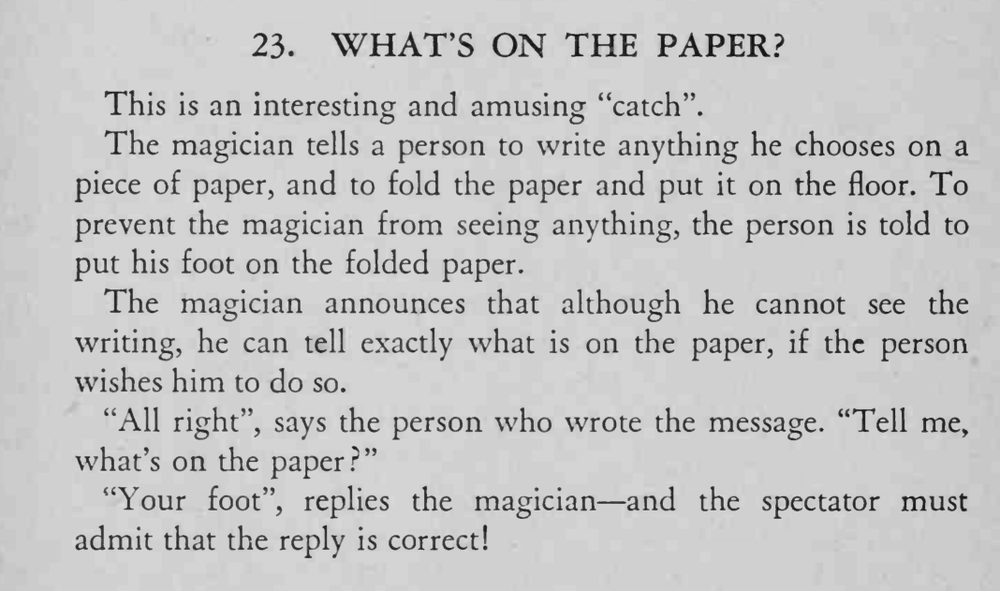

观众在纸上写任何内容、折好踩在脚下，魔术师说能准确说出纸上是什么，答案却是「你的脚」。
这是利用字面意思的玩笑，语气要一本正经，等观众反应过来才有效果。

This is an interesting and amusing "catch". The magician tells a person to write anything he chooses on a piece of paper, and to fold the paper and put it on the floor. To prevent the magician from seeing anything, the person is told to put his foot on the folded paper. The magician announces that although he cannot see the writing, he can tell exactly what is on the paper, if the person wishes him to do so. "All right", says the person who wrote the message. "Tell me, "Your foot", replies the magician and the spectator must admit that the reply is correct!